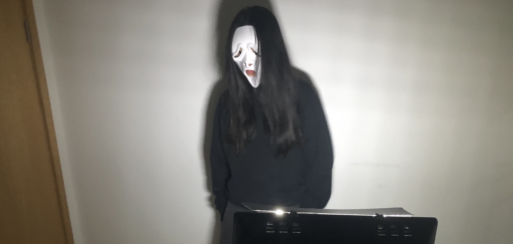

Significance
This project allowed us to experiment with a new dimension in VR: haptics. By providing the visitor with touch stimulus that matched the video, we were able to make the complete experience more immersive. Although haptics bodysuits and controllers are now available, they are expensive and limited in the scope of touch stimulus that they can provide. However, through our project we were able to use everyday objects like a wig and heating pad to augment the viewer’s immersion and provide stimuli like hair on the user’s face.
